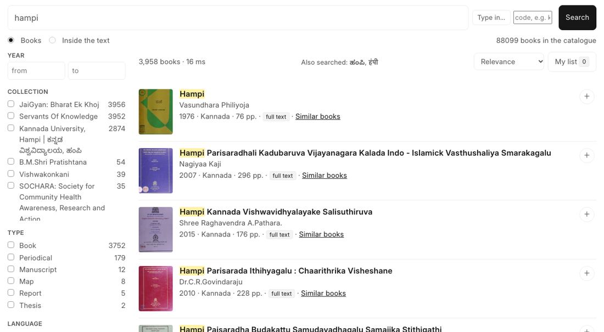
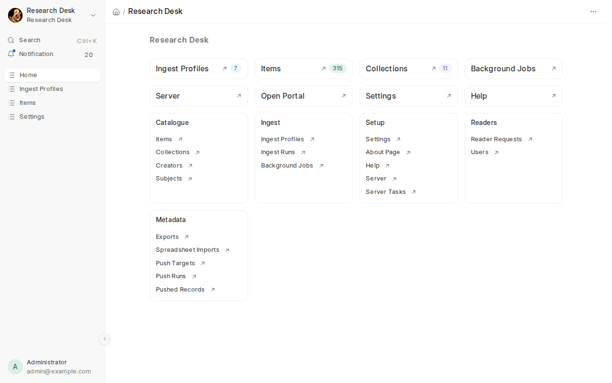

ನಮ್ಮ ತಂತ್ರಾಂಶ
SOK Research Desk
ಪುಸ್ತಕಗಳು, ಹಸ್ತಪ್ರತಿಗಳು, ಛಾಯಾಚಿತ್ರಗಳು ಮತ್ತು ಧ್ವನಿಮುದ್ರಣಗಳಿಗಾಗಿ ಮುಕ್ತ ಮೂಲದ ಡಿಜಿಟಲ್ ಗ್ರಂಥಾಲಯ, ಆರ್ಕೈವ್ ಮತ್ತು ಸಂಶೋಧನಾ ವೇದಿಕೆ. ಭಾರತೀಯ ಭಾಷೆಗಳಿಗಾಗಿ ರೂಪಿತ, ಎಲ್ಲಾ ಭಾಷೆಗಳಿಗೂ ತೆರೆದಿದೆ.
Research Desk
ಪ್ರತಿ ಪುಟದ ಪೂರ್ಣ ಪಠ್ಯ, ಕನ್ನಡ, ಹಿಂದಿ, ತಮಿಳು ಮತ್ತು ಇತರ ಭಾಷೆಗಳಲ್ಲಿ.
ಪುಟ ಪುಟವಾಗಿ ಓದುವ ಸಾಧನ, ಟಿಪ್ಪಣಿಗಳು, ಓದುವ ಪಟ್ಟಿಗಳು ಮತ್ತು ಸಾಮಾನ್ಯ ಉಲ್ಲೇಖ ಸ್ವರೂಪಗಳು.
ಜನರು ಪಠ್ಯವನ್ನು ತಿದ್ದುತ್ತಾರೆ, ತಪ್ಪಿರುವ ಕಡೆ ಒಸಿಆರ್ ಅನ್ನು ಮತ್ತೆ ಓಡಿಸುತ್ತಾರೆ. ತಂತ್ರಾಂಶ ಮೊದಲ ಕರಡನ್ನು ಮಾತ್ರ ಮಾಡುತ್ತದೆ.
ಶಾಶ್ವತ ಲಿಂಕ್ಗಳು, ಚೆಕ್ಸಮ್ಗಳು ಮತ್ತು ತಾನೇ ಸರಿಪಡಿಸಿಕೊಳ್ಳುವ ಎರಡನೇ ಪ್ರತಿ.
Servants Of Knowledge ನ ಲೈವ್ ಪೋರ್ಟಲ್ನ ಅಂಕಿಗಳು. ನಿಮ್ಮ ಸಂಗ್ರಹ ಮತ್ತು ಯಂತ್ರಾಂಶಕ್ಕೆ ಅನುಗುಣವಾಗಿ ನಿಮ್ಮದು ಬೇರೆಯಾಗಿರುತ್ತದೆ.





| ಹಂತ | ಸಾಮಾನ್ಯ ಸಾಧನಗಳು | Research Desk | ಏನು ಮಾಡುತ್ತದೆ |
|---|---|---|---|
| ಡಿಜಿಟಲ್ ಗ್ರಂಥಾಲಯ / ಭಂಡಾರ | Greenstone, Omeka, CONTENTdm, DSpace, EPrints | ಬದಲಾಯಿಸುತ್ತದೆ | ಪಟ್ಟಿ, ಪೋರ್ಟಲ್, ಸಂಗ್ರಹಗಳು ಮತ್ತು OAI-PMH ಒಂದೇ ಅಳವಡಿಕೆಯಲ್ಲಿ |
| ಹುಡುಕಾಟ ಮತ್ತು ಅನ್ವೇಷಣೆ | VuFind, Blacklight | ಬದಲಾಯಿಸುತ್ತದೆ | ಭಾರತೀಯ ಲಿಪಿಗಳಲ್ಲಿ ಮತ್ತು ಲ್ಯಾಟಿನ್ ಅಕ್ಷರಗಳಲ್ಲಿ ಪೂರ್ಣಪಠ್ಯ ಹುಡುಕಾಟ, ಫೆಸೆಟ್ಗಳೊಂದಿಗೆ |
| ಓದುವ ಸಾಧನ | Internet Archive BookReader, Mirador, Universal Viewer | ಒಳಗೊಂಡಿದೆ | ಪುಟದ ಚಿತ್ರ ಅದರ ಪಠ್ಯದ ಪಕ್ಕದಲ್ಲೇ, ಉಲ್ಲೇಖಗಳು, ಟಿಪ್ಪಣಿಗಳು. ಪ್ರತಿ ಪುಸ್ತಕವೂ ಒಂದು IIIF ಮ್ಯಾನಿಫೆಸ್ಟ್ |
| ಒಸಿಆರ್ ಮತ್ತು ತಿದ್ದುವಿಕೆ | Tesseract scripts, FromThePage, Wikisource-style projects | ಬದಲಾಯಿಸುತ್ತದೆ | ಇಂಜೆಸ್ಟ್ ವೇಳೆ ಒಸಿಆರ್, ವಲಯವಾರು ಮರು-ಒಸಿಆರ್, ತಿದ್ದುವಿಕೆ, ಗ್ರೌಂಡ್ ಟ್ರೂತ್ |
| ಸಂರಕ್ಷಣೆ | Archivematica, Preservica, LOCKSS | ಸಣ್ಣ ಸಂಸ್ಥೆಗಳಿಗೆ ಬದಲಾಯಿಸುತ್ತದೆ | ಸ್ಥಿರತೆ ಪರೀಕ್ಷೆ, OCFL, BagIt, ಎರಡನೇ ಪ್ರತಿ, ARK ಗಳು. ಪೂರ್ಣ OAIS ಅಲ್ಲ |
| ಗ್ರಂಥಾಲಯ ವ್ಯವಸ್ಥೆ (ILS) | Koha, Evergreen, SOUL, e-Granthalaya | ಪೂರಕ | ಪಟ್ಟಿಯನ್ನು ಡಿಜಿಟಲ್ ಪ್ರತಿಗಳಿಗೆ ಜೋಡಿಸಿ, ಲಿಂಕ್ಗಳನ್ನು ಹಿಂದಕ್ಕೆ ಕಳುಹಿಸುತ್ತದೆ |
| ಸಂಕಲನ ವೇದಿಕೆಗಳು | NDLI, Europeana, DPLA, Wikidata, Wikimedia Commons, Wikisource, Internet Archive | ದತ್ತಾಂಶ ಪೂರೈಸುತ್ತದೆ | OAI-PMH, OPDS, IIIF, Wikidata links, archive.org |
| ಡಿಜಿಟಲೀಕರಣ ಕಾರ್ಯಪ್ರವಾಹ | Goobi, Kitodo, Scribe | ಅಗತ್ಯವಾದುದನ್ನು ಒಳಗೊಂಡಿದೆ | TTScribe ಸ್ಕ್ಯಾನಿಂಗ್ ಯಂತ್ರಾಂಶ ಮತ್ತು Repub ಸಂಸ್ಕರಣೆ (Servants Of Knowledge) |
| ಆರ್ಕೈವ್ ವಿವರಣೆ | AtoM, ArchivesSpace | ಅಗತ್ಯವಾದುದನ್ನು ಒಳಗೊಂಡಿದೆ | ಫಾಂಡ್ಸ್ನಿಂದ ಕೃತಿಯವರೆಗೆ (ISAD(G)), EAD3 ರಫ್ತು. ಅಧಿಕೃತ ದಾಖಲೆಗಳಲ್ಲ |
| ಸಂಸ್ಥಾ ಭಂಡಾರ | ಪ್ರಬಂಧಗಳು ಮತ್ತು ಲೇಖನಗಳಿಗೆ DSpace ಅಥವಾ EPrints | ಅಗತ್ಯವಾದುದನ್ನು ಒಳಗೊಂಡಿದೆ | ಪರಿಶೀಲನೆಯೊಂದಿಗೆ ಸಲ್ಲಿಕೆ, ಪರವಾನಗಿಗಳು, ನಿರ್ಬಂಧ ಅವಧಿಗಳು. ಬಹು-ಹಂತದ ಕಾರ್ಯಪ್ರವಾಹಗಳಲ್ಲ |
ಪ್ರತಿ ಪುಟವೂ ಆ್ಯಪ್ನ ಒಳಗೆ, ಸಹಾಯ ವಿಭಾಗದಲ್ಲೂ ಇದೆ. ದಾಖಲೆ ಸೂಚಿ · ಅದು ಮಾಡುವ ಎಲ್ಲವೂ · GitHub
ಒಂದು ಲ್ಯಾಪ್ಟಾಪ್ ಅಥವಾ ಒಂದು ಯಂತ್ರ, ಸುಮಾರು 20 ನಿಮಿಷಗಳಲ್ಲಿ
macOS ಅಥವಾ Ubuntu ನಲ್ಲಿ Docker ಅಥವಾ ನೇರ ಅಳವಡಿಕೆ. 4 GB ಖಾಲಿ ಮೆಮೊರಿ ಮತ್ತು 10 GB ಡಿಸ್ಕ್. ಪ್ರಯತ್ನಿಸಲು ಮಾದರಿ ಪುಸ್ತಕಗಳನ್ನು ಲೋಡ್ ಮಾಡಬಹುದು.
ನಿಮ್ಮದೇ ಸರ್ವರ್, ನಿಮ್ಮದೇ ಹೆಸರು
HTTPS ಇರುವ ವೆಬ್ ವಿಳಾಸ, ನಿಮ್ಮ ಲಾಂಛನ ಮತ್ತು ನಮ್ಮ ಬಗ್ಗೆ ಪುಟ, ಸದಸ್ಯರಿಗೆ ಮಾತ್ರ ಪುಸ್ತಕಗಳು, ರಾತ್ರಿಯ ಬ್ಯಾಕಪ್ಗಳು, ಹಾಗೂ ರೋಲ್ಬ್ಯಾಕ್ ಸೌಲಭ್ಯದ ಬಟನ್ ಮೂಲಕ ಅಪ್ಗ್ರೇಡ್ಗಳು.
ಐಚ್ಛಿಕ ಆಡಳಿತ ಆವೃತ್ತಿ
ಇಲಾಖೆಗಳು ಮತ್ತು ಸಾರ್ವಜನಿಕ ಆರ್ಕೈವ್ಗಳಿಗೆ ದಾಖಲೆ-ಕಚೇರಿ ಆ್ಯಪ್ ಸೇರಿಸುತ್ತದೆ. ಒಂದೇ ಫ್ಲ್ಯಾಗ್ನಿಂದ ಅಳವಡಿಸಬಹುದು.
# ಪಡೆಯಿರಿ
git clone https://github.com/ServantsOfKnowledge/researchdesk.git
cd researchdesk
# ಅಳವಡಿಸಿ
./install.sh
./install.sh --domain library.example.org # ಸರ್ವರ್ನಲ್ಲಿ, HTTPS ಜೊತೆ
./install.sh --edition governance # ದಾಖಲೆ-ಕಚೇರಿ ಆ್ಯಪ್ ಸೇರಿಸುತ್ತದೆ
# ನವೀಕೃತವಾಗಿಡಿ
./upgrade.shಸ್ಥಿತಿ: 1.0 ಗೂ ಮೊದಲು. ಇದು ಆದಿಯಿಂದ ಅಂತ್ಯದವರೆಗೆ ಕೆಲಸ ಮಾಡುತ್ತದೆ ಮತ್ತು Servants Of Knowledge ನ ಲೈವ್ ಪೋರ್ಟಲ್ ಅನ್ನು ನಡೆಸುತ್ತದೆ. ಅಳವಡಿಕೆ ಮಾರ್ಗದರ್ಶಿ · ಮಾರ್ಗಸೂಚಿ · ಬದಲಾವಣೆ ಪಟ್ಟಿ